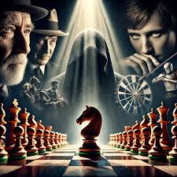

Good chess strategy begins with simple habits. New players should try to control the center of the board, protect their king, and avoid moving the same piece too many times during the opening. These basic ideas can help beginners make stronger decisions and avoid common mistakes.
Remember: chess improvement takes patience, practice, and focus — every game is a chance to learn something new.
Return to Project Checkmate homepage
Learn more beginner chess strategies from Lichess Learn , a free resource that teaches chess fundamentals and tactics.